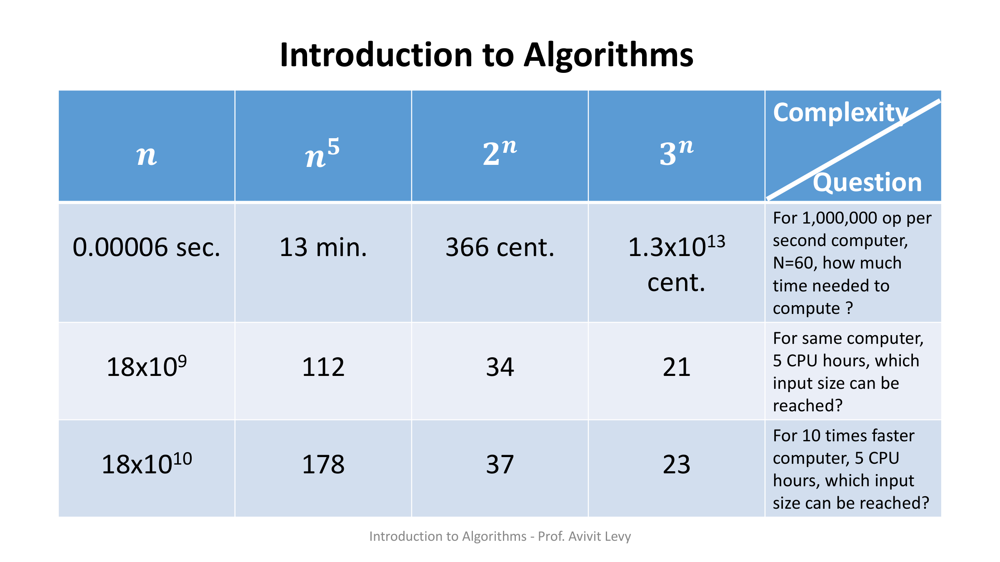
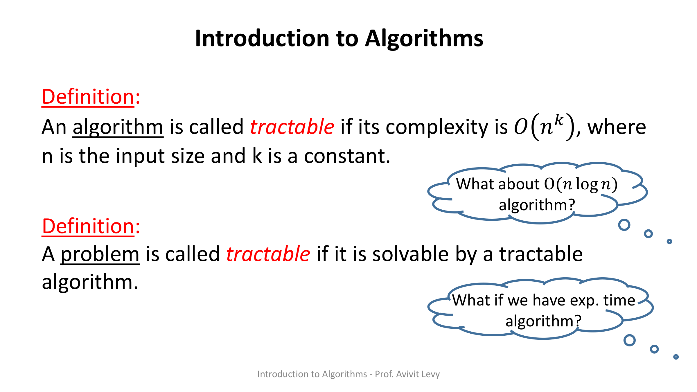
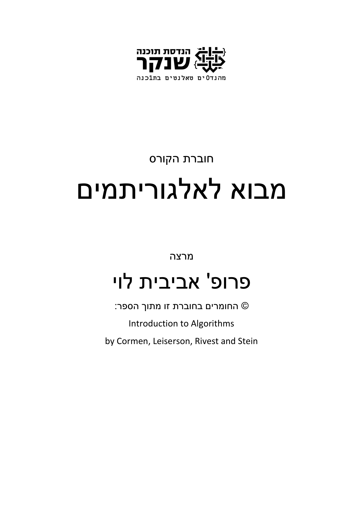
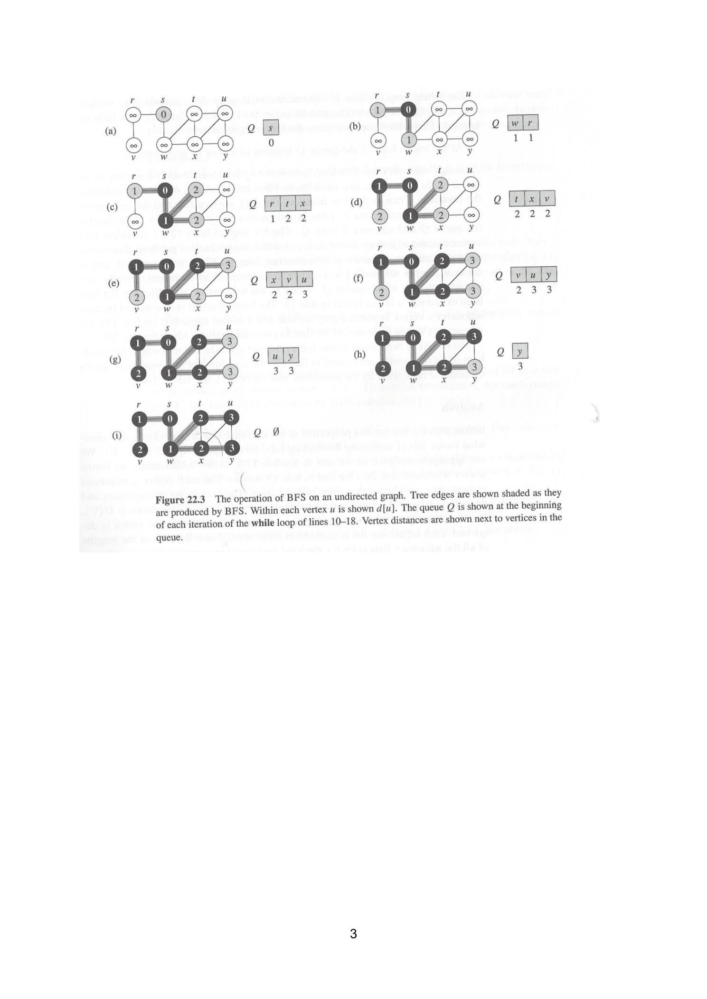
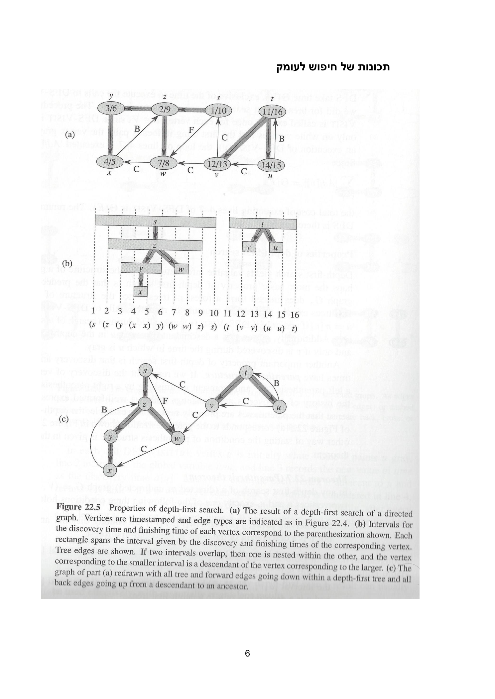
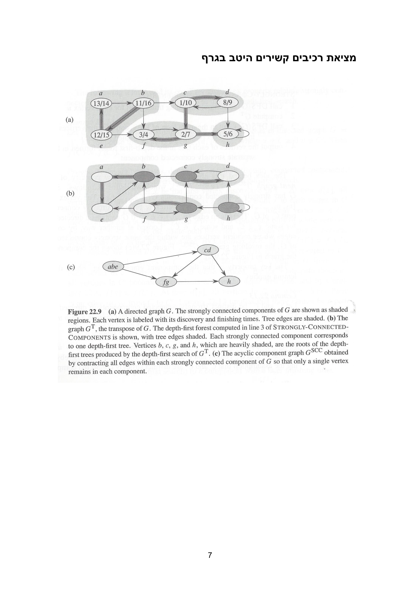
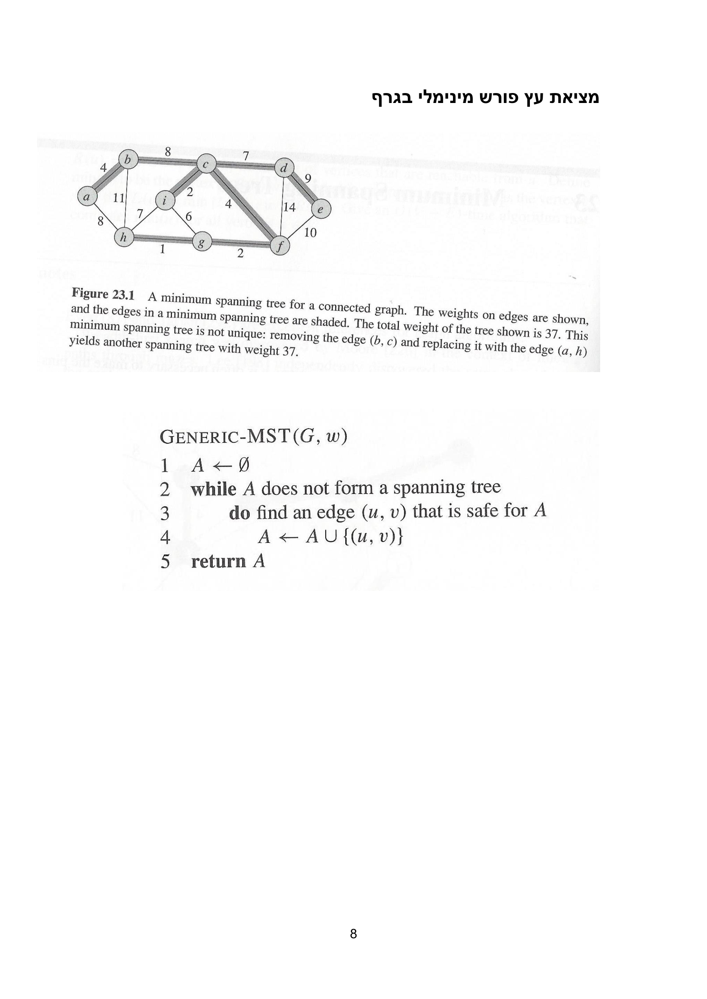
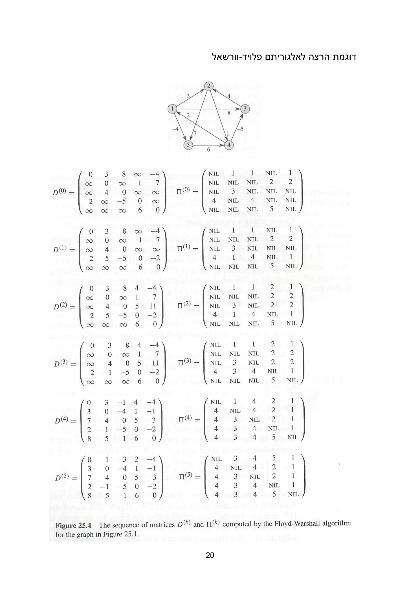
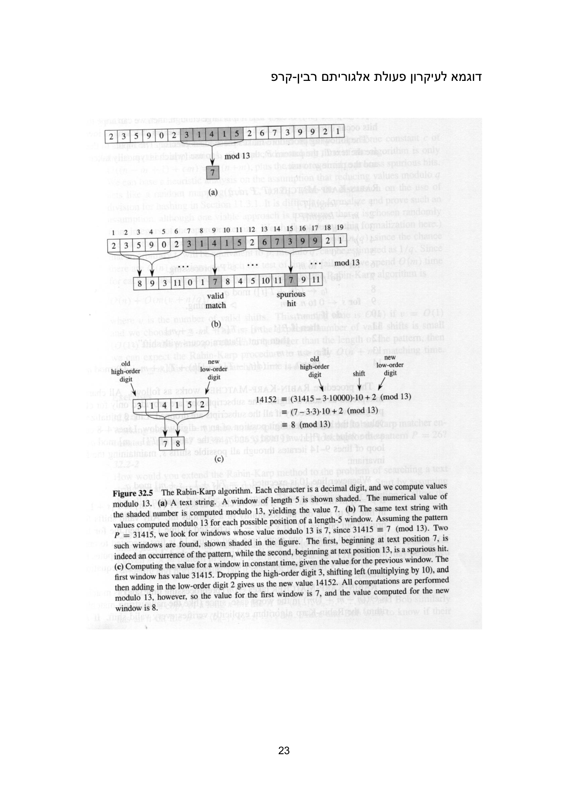
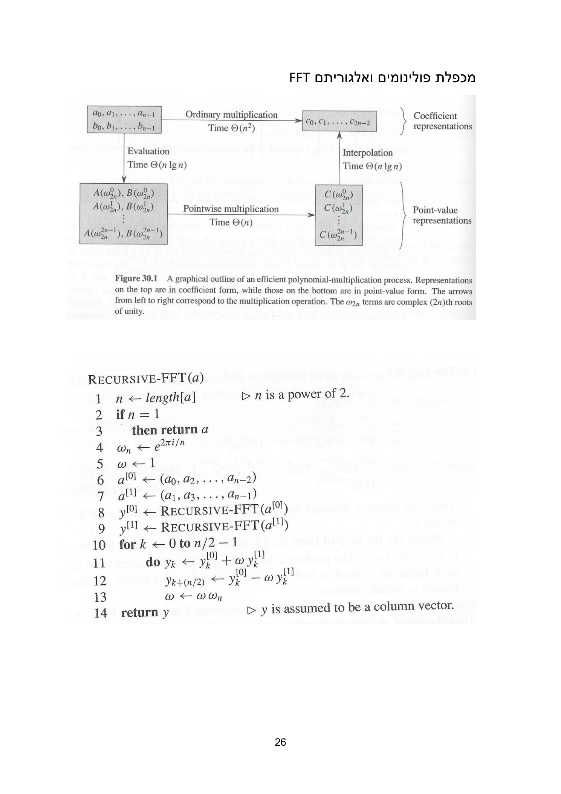

מבוא — יעילות, בעיות פולינומיאליות מול קשות
⏱ זמן משוער: 35 דק'
0. השאלה המרכזית — מה הופך אלגוריתם ל"יעיל"?
אתה כבר יודע לתכנת, וכמעט תמיד קיימת יותר מדרך אחת לפתור בעיה. הקורס מבוא לאלגוריתמים עוסק בשאלה אחת גדולה: מבין כל הדרכים לפתור בעיה, מהי יעילה, ומתי בעיה נחשבת בכלל פתירה בפועל? התשובה שהקורס נותן היא חדה: אלגוריתם נחשב יעיל אם זמן הריצה שלו חסום בפולינום בגודל הקלט, ובעיה נחשבת "בת-טיפול" (tractable) אם קיים לה אלגוריתם כזה.
הפער בין זמן ריצה פולינומי (למשל n, n·log n, n²) לבין זמן ריצה אקספוננציאלי (למשל 2ⁿ, 3ⁿ) איננו "עוד קצת יותר איטי" — הוא תהום מעשית. אלגוריתם אקספוננציאלי הופך בלתי-שמיש כבר בקלטים קטנים למדי, וחומרה מהירה יותר כמעט לא מצילה אותו. את התובנה הזאת נבסס תכף בעזרת טבלת המספרים של המרצה.
מקור: introduction.pdf (שקפים 1–4), course-booklet-avivit-levy-2021.pdf
1. האינטואיציה — טבלת זמני הריצה (Complexity Question)
שלוש השקופיות הראשונות של המרצה בונות בהדרגה טבלה אחת. ההנחה לכל אורכה: המחשב מבצע 1,000,000 פעולות בשנייה. משווים ארבעה אלגוריתמים היפותטיים שזמן הריצה שלהם (במספר פעולות) הוא n, n⁵, 2ⁿ ו-3ⁿ. שימו לב: n ו-n⁵ פולינומיים, 2ⁿ ו-3ⁿ אקספוננציאליים. יחידות הזמן: sec. (שניות), min. (דקות), ו-cent. (centuries — מאות שנים, יחידה שהמרצה בחר כדי להמחיש זמנים בלתי-מעשיים).

1.1 שורה ראשונה — כמה זמן ייקח עבור N=60?
השאלה: "For 1,000,000 op per second computer, N=60, how much time needed to compute?" — בהינתן קלט בגודל n=60, כמה זמן ידרוש כל אלגוריתם?
| n | n⁵ | 2ⁿ | 3ⁿ |
|---|---|---|---|
| 0.00006 sec. | 13 min. | 366 cent. | 1.3×10¹³ cent. |
קריאה של השורה: אלגוריתם ליניארי מסיים ב-60 / 1,000,000 = 0.00006 שניות; n⁵ הוא 60⁵ פעולות ≈ 13 דקות (עוד סביר); 2⁶⁰ ≈ 366 מאות שנים; ו-3⁶⁰ ≈ 1.3×10¹³ מאות שנים — כלומר בלתי-אפשרי בפועל. כבר ב-n=60 האקספוננט קרס לחלוטין, בעוד הפולינום עדיין ריאלי.
1.2 שורה שנייה — עד איזה גודל קלט מגיעים ב-5 שעות?
השאלה: "For same computer, 5 CPU hours, which input size can be reached?" — עם אותו מחשב ותקציב של 5 שעות CPU, מהו גודל הקלט N המקסימלי שכל אלגוריתם מספיק לעבד?
| n | n⁵ | 2ⁿ | 3ⁿ |
|---|---|---|---|
| 18×10⁹ | 112 | 34 | 21 |
הליניארי מגיע לקלט עצום, N≈18×10⁹ (זהו בדיוק מספר הפעולות ב-5 שעות של מיליון פעולות/שנייה); n⁵ מגיע רק ל-N=112; אבל 2ⁿ נחנק כבר ב-N=34 ו-3ⁿ ב-N=21 בלבד. שימו לב עד כמה "שטוחים" האקספוננטים.
1.3 שורה שלישית — התובנה: מחשב מהיר פי 10
השאלה: "For 10 times faster computer, 5 CPU hours, which input size can be reached?" — מה קורה אם נחליף למחשב מהיר פי 10?
| n | n⁵ | 2ⁿ | 3ⁿ |
|---|---|---|---|
| 18×10¹⁰ | 178 | 37 | 23 |
זו בדיוק הסיבה שהקורס משקיע את כל מרצו במעבר מאלגוריתם נאיבי (לעיתים אקספוננציאלי) לאלגוריתם פולינומי חכם — למשל מהתאמת מחרוזות נאיבית ל-KMP, או מכפל פולינומים ב-Θ(n²) ל-FFT ב-Θ(n log n).
מקור: introduction.pdf (שקפים 1–3, "Complexity Question")
2. ההגדרות — Tractable ו-Intractable
השקופית הרביעית של המרצה נותנת את שתי ההגדרות הפורמליות. המונח tractable מודגש במקור באדום ובנטוי, והמילים algorithm ו-problem מודגשות בקו-תחתון:

לצד כל הגדרה מופיע ענן-מחשבה שמעלה שאלה מכוונת. לצד הגדרת האלגוריתם: "What about O(n log n) algorithm?" — האם אלגוריתם ב-O(n log n) הוא tractable? התשובה כן: אף ש-n log n אינו כתוב במפורש כ-nᵏ, הוא חסום מלמעלה בפולינום (למשל n log n ≤ n² לכל n≥1), ולכן הוא נופל בהגדרה. לצד הגדרת הבעיה: "What if we have exp. time algorithm?" — אם כל שיש לנו הוא אלגוריתם בזמן אקספוננציאלי, הבעיה (בכל הידוע לנו) איננה tractable, וזהו בדיוק העולם של הבעיות ה"קשות".
מקור: introduction.pdf (שקף 4)
3. יסודות ניתוח סיבוכיות — מרוץ פונקציות הגדילה
כדי לומר "אלגוריתם A יעיל יותר מ-B" צריך שפה מדויקת לתיאור קצב הגדילה של זמן הריצה כפונקציה של גודל הקלט n. את הסימון O(·) ראינו כבר בהגדרות: f(n) = O(g(n)) אומר ש-g הוא חסם עליון אסימפטוטי של f — כלומר החל מ-n גדול מספיק, f אינו גדל מהר יותר מ-g (עד כדי קבוע).
ההמחשה למטה היא "מרוץ" בין פונקציות הגדילה שנפגוש לאורך הקורס: n, n·log n, n², n³ ו-2ⁿ. גררו את המחוון של n וראו איך האקספוננט 2ⁿ "בורח" מכל הפולינומים כבר בערכים קטנים — בדיוק הסיפור של טבלת המרצה, עכשיו כגרף.
🎓 הרחבה — לא נדרש למבחן: שלושת הסימונים O, Ω, Θ
השקפים משתמשים ב-O(·) בלבד, אבל שווה להכיר את שלושת הסימונים האסימפטוטיים המלאים (הם נלמדים בהרחבה ומופיעים בסרטון שלמטה):
- O(g) — חסם עליון: f גדל לכל היותר כמו g. "אלגוריתם tractable" מוגדר דרך חסם זה: O(nᵏ).
- Ω(g) — חסם תחתון: f גדל לפחות כמו g.
- Θ(g) — חסם הדוק: גם עליון וגם תחתון — f גדל בדיוק בקצב של g. למשל, מיון-מיזוג הוא Θ(n log n).
כלל אצבע לסידור לפי קצב גדילה (מהאיטי למהיר), עבור n גדול: 1 < log n < n < n·log n < n² < n³ < 2ⁿ < 3ⁿ < n!.
מקור: introduction.pdf (הגדרת O(nᵏ), שקף 4) · הרחבת Ω/Θ — העשרה
4. מבנה הקורס והמבחן
חוברת הקורס (course-booklet) שערוכה בידי המרצה, Prof. Avivit Levy, מסודרת לפי סדר הנושאים של הקורס. כל הפסאודו-קודים והאיורים בה לקוחים מהספר Introduction to Algorithms מאת Cormen, Leiserson, Rivest & Stein (CLRS, מהדורה 2 — ולכן הסימונים color[], d[], f[], π[] תואמים למהדורה זו). שער החוברת נושא את לוגו שנקר, שם הקורס, שם המרצה וקרדיט ל-CLRS.

סדר הנושאים של הקורס, כפי שהוא מופיע בחוברת (וכפי שנלמד באשכולות הייעודיים):
- אלגוריתמים בסיסיים בגרפים: BFS ו-DFS ותכונותיו.
- מציאת רכיבים קשירים היטב בגרף (SCC).
- עץ פורש מינימלי (MST): Generic-MST, Prim, Kruskal.
- מסלולים קצרים ממקור יחיד: relaxation, Dijkstra, Bellman-Ford ואילוצי הפרשים.
- מסלולים קצרים בין כל הזוגות ותכנון דינמי: Floyd-Warshall.
- זרימה מקסימלית: Ford-Fulkerson.
- התאמת מחרוזות: נאיבי, Rabin-Karp, KMP.
- מכפלת פולינומים ואלגוריתם FFT.
מקור: syllabus.pdf, course-booklet-avivit-levy-2021.pdf (עמ' 1)
5. מפת הפסאודו-קוד של הקורס (רפרנס מהחוברת)
לפניכם כל הפסאודו-קודים המרכזיים של הקורס, מועתקים מילה-במילה מחוברת הרפרנס (מקורם CLRS), עם כותרות-הנושא בעברית בדיוק כפי שהמרצה כתבה. זהו מבט-על: לכל אלגוריתם ניתן כאן הסבר קצר בלבד, וההסבר המלא (הרצה צעד-אחר-צעד, ניתוח סיבוכיות והוכחות נכונות) נמצא באשכול הייעודי לו. הסימונים: color[u] — צבע קודקוד (WHITE/GRAY/BLACK); d[u] — מרחק / זמן גילוי / אומדן; π[u] — הורה; f[u] — זמן סיום; Adj[u] — רשימת שכנים; w(u,v) — משקל קשת.
5.1 אלגוריתמים בסיסיים בגרפים — חיפוש לרוחב (BFS)
BFS סורק את הגרף לפי שכבות של מרחק עולה מהמקור s, בעזרת תור Q. כל קודקוד נצבע WHITE→GRAY כשהוא מתגלה ומוכנס לתור, ו-GRAY→BLACK כשסיימנו לעבד את שכניו; d[u] סופר את מספר הקשתות מהמקור.
BFS(G, s)
1 for each vertex u ∈ V[G] − {s}
2 do color[u] ← WHITE
3 d[u] ← ∞
4 π[u] ← NIL
5 color[s] ← GRAY
6 d[s] ← 0
7 π[s] ← NIL
8 Q ← ∅
9 ENQUEUE(Q, s)
10 while Q ≠ ∅
11 do u ← DEQUEUE(Q)
12 for each v ∈ Adj[u]
13 do if color[v] = WHITE
14 then color[v] ← GRAY
15 d[v] ← d[u] + 1
16 π[v] ← u
17 ENQUEUE(Q, v)
18 color[u] ← BLACK
קריאה מהירה: שורות 1–7 אתחול (המקור GRAY, d[s]=0, כל השאר לבנים עם d=∞); שורות 8–9 אתחול התור עם s; הלולאה 10–18 מוציאה קודקוד מהתור ומגלה את שכניו הלבנים, מעדכנת d[v]=d[u]+1 ומכניסה אותם לתור. ההסבר המלא באשכול "חזרה על גרפים".

5.2 חיפוש לעומק (DFS) ותכונותיו
DFS סורק רקורסיבית "עמוק ככל האפשר" לפני חזרה, ומחתים כל קודקוד בשתי חותמות זמן: d[u] (זמן גילוי) ו-f[u] (זמן סיום). ההערות המסומנות ▷ מופיעות במקור.
DFS(G) 1 for each vertex u ∈ V[G] 2 do color[u] ← WHITE 3 π[u] ← NIL 4 time ← 0 5 for each vertex u ∈ V[G] 6 do if color[u] = WHITE 7 then DFS-VISIT(u) DFS-VISIT(u) 1 color[u] ← GRAY ▷ White vertex u has just been discovered. 2 time ← time + 1 3 d[u] ← time 4 for each v ∈ Adj[u] ▷ Explore edge (u, v). 5 do if color[v] = WHITE 6 then π[v] ← u 7 DFS-VISIT(v) 8 color[u] ← BLACK ▷ Blacken u; it is finished. 9 f[u] ← time ← time + 1
קריאה מהירה: החותמות d/f מקיימות את מבנה הסוגריים — הקטעים [d[u],f[u]] של שני קודקודים הם או מקוננים (יחס אב-צאצא) או זרים לחלוטין. מכאן מסווגים קשתות ל-tree, back, forward ו-cross.

5.3 מציאת רכיבים קשירים היטב בגרף (SCC)
רכיב קשיר היטב הוא תת-קבוצה מקסימלית של קודקודים בגרף מכוון שבה מכל קודקוד יש מסלול מכוון לכל קודקוד אחר. האלגוריתם שנלמד משתמש ב-DFS, בגרף המשוחלף Gᵀ, ובניית גרף הרכיבים GSCC (שהוא תמיד DAG).

5.4 מציאת עץ פורש מינימלי (MST) — הגישה הגנרית
האלגוריתם הגנרי בונה קבוצת קשתות A תוך שמירה על אינווריאנטה (invariant): A תמיד תת-קבוצה של MST כלשהו. בכל צעד מוסיפים קשת בטוחה — קשת שהוספתה שומרת על התכונה הזו.
GENERIC-MST(G, w)
1 A ← ∅
2 while A does not form a spanning tree
3 do find an edge (u, v) that is safe for A
4 A ← A ∪ {(u, v)}
5 return A
משפט הקשת הבטוחה קובע שקשת קלה החוצה חתך המכבד את A היא תמיד קשת בטוחה. Prim ו-Kruskal הם שני מימושים שונים של רעיון חמדני זה.

האלגוריתם של פרים — MST-PRIM
Prim מגדל עץ יחיד משורש r: key[u] מחזיק את משקל הקשת הקלה ביותר המחברת את u לעץ, ותור-עדיפויות Q מחלץ בכל צעד את הקודקוד הקרוב ביותר.
MST-PRIM(G, w, r) 1 for each u ∈ V[G] 2 do key[u] ← ∞ 3 π[u] ← NIL 4 key[r] ← 0 5 Q ← V[G] 6 while Q ≠ ∅ 7 do u ← EXTRACT-MIN(Q) 8 for each v ∈ Adj[u] 9 do if v ∈ Q and w(u, v) < key[v] 10 then π[v] ← u 11 key[v] ← w(u, v)
האלגוריתם של קרוסקל — MST-KRUSKAL
Kruskal בונה יער שגדל: ממיין את הקשתות בסדר עולה של משקל, ומוסיף כל קשת שאינה סוגרת מעגל — בדיקה שנעשית בעזרת מבנה Union-Find (הפעולות MAKE-SET, FIND-SET, UNION).
MST-KRUSKAL(G, w)
1 A ← ∅
2 for each vertex v ∈ V[G]
3 do MAKE-SET(v)
4 sort the edges of E into nondecreasing order by weight w
5 for each edge (u, v) ∈ E, taken in nondecreasing order by weight
6 do if FIND-SET(u) ≠ FIND-SET(v)
7 then A ← A ∪ {(u, v)}
8 UNION(u, v)
9 return A
5.5 מסלולים קצרים ממקור יחיד — טכניקת ההקלה
כל אלגוריתמי המסלולים הקצרים בנויים על שתי פעולות יסוד: אתחול (d[s]=0, השאר ∞) והקלה של קשת — עדכון d[v] אם נמצא מסלול קצר יותר דרך u.
INITIALIZE-SINGLE-SOURCE(G, s) 1 for each vertex v ∈ V[G] 2 do d[v] ← ∞ 3 π[v] ← NIL 4 d[s] ← 0 RELAX(u, v, w) 1 if d[v] > d[u] + w(u, v) 2 then d[v] ← d[u] + w(u, v) 3 π[v] ← u
האלגוריתם של דאיקסטרה — DIJKSTRA
Dijkstra (למשקלים אי-שליליים) מחזיק קבוצת קודקודים "סגורים" S ותור-עדיפויות; בכל צעד מחלץ את הקודקוד עם d המינימלי ומבצע הקלה על שכניו.
DIJKSTRA(G, w, s)
1 INITIALIZE-SINGLE-SOURCE(G, s)
2 S ← ∅
3 Q ← V[G]
4 while Q ≠ ∅
5 do u ← EXTRACT-MIN(Q)
6 S ← S ∪ {u}
7 for each vertex v ∈ Adj[u]
8 do RELAX(u, v, w)
האלגוריתם של בלמן-פורד — BELLMAN-FORD
Bellman-Ford מטפל גם במשקלים שליליים: מבצע |V|−1 סבבים של הקלה על כל הקשתות, וסבב נוסף שמזהה מעגל שלילי (מחזיר FALSE אם קיים). זהו גם המנוע לפתרון מערכת אילוצי הפרשים.
BELLMAN-FORD(G, w, s) 1 INITIALIZE-SINGLE-SOURCE(G, s) 2 for i ← 1 to |V[G]| − 1 3 do for each edge (u, v) ∈ E[G] 4 do RELAX(u, v, w) 5 for each edge (u, v) ∈ E[G] 6 do if d[v] > d[u] + w(u, v) 7 then return FALSE 8 return TRUE
5.6 מסלולים בין כל הזוגות ותכנון דינמי — Floyd-Warshall
Floyd-Warshall הוא דוגמת הדגל של תכנון דינמי בקורס. משתנה המצב dij(k) הוא משקל המסלול הקצר ביותר מ-i ל-j שמשתמש רק בקודקודי-ביניים מהקבוצה {1,…,k}. הנוסחה הרקורסיבית (VERBATIM):
d_ij^(k) = { w_ij if k = 0 ,
{ min( d_ij^(k-1), d_ik^(k-1) + d_kj^(k-1) ) if k ≥ 1 .
FLOYD-WARSHALL(W) 1 n ← rows[W] 2 D^(0) ← W 3 for k ← 1 to n 4 do for i ← 1 to n 5 do for j ← 1 to n 6 do d_ij^(k) ← min( d_ij^(k-1), d_ik^(k-1) + d_kj^(k-1) ) 7 return D^(n)
המרצה מלמד את האלגוריתם דרך ארבעת שלבי התכנון הדינמי: (1) אפיון מבנה פתרון אופטימלי, (2) ניסוח רקורסיבי, (3) אלגוריתם איטרטיבי מלמטה-למעלה עם טבלה, (4) בניית הפתרון מהמידע.

5.7 זרימה מקסימלית — Ford-Fulkerson
שיטת Ford-Fulkerson מגדילה את הזרימה כל עוד קיים מסלול משפר מ-s ל-t ברשת השיורית Gf, ודוחפת לאורכו זרימה בגובה cf(p) (המינימום על קשתות המסלול).
FORD-FULKERSON(G, s, t)
1 for each edge (u, v) ∈ E[G]
2 do f[u, v] ← 0
3 f[v, u] ← 0
4 while there exists a path p from s to t in the residual network G_f
5 do c_f(p) ← min { c_f(u, v) : (u, v) is in p }
6 for each edge (u, v) in p
7 do f[u, v] ← f[u, v] + c_f(p)
8 f[v, u] ← −f[u, v]
5.8 התאמת מחרוזות — נאיבי, Rabin-Karp, KMP
בעיית התאמת מחרוזות: למצוא את כל ההיסטים s שבהם התבנית P[1..m] מופיעה בטקסט T[1..n]. האלגוריתם הנאיבי בודק כל היסט בנפרד בזמן O(n·m):
NAIVE-STRING-MATCHER(T, P) 1 n ← length[T] 2 m ← length[P] 3 for s ← 0 to n − m 4 do if P[1 .. m] = T[s + 1 .. s + m] 5 then print "Pattern occurs with shift" s
Rabin-Karp מזרז זאת בעזרת hashing מודולו q וחלון מתגלגל: משווים תחילה ערכי hash ורק בהתאמה מאמתים תו-תו — כדי לפסול פגיעות מזויפות.
RABIN-KARP-MATCHER(T, P, d, q) 1 n ← length[T] 2 m ← length[P] 3 h ← d^(m-1) mod q 4 p ← 0 5 t_0 ← 0 6 for i ← 1 to m ▷ Preprocessing. 7 do p ← (dp + P[i]) mod q 8 t_0 ← (dt_0 + T[i]) mod q 9 for s ← 0 to n − m ▷ Matching. 10 do if p = t_s 11 then if P[1 .. m] = T[s + 1 .. s + m] 12 then print "Pattern occurs with shift" s 13 if s < n − m 14 then t_(s+1) ← (d(t_s − T[s + 1]h) + T[s + m + 1]) mod q

KMP משיג זמן Θ(n+m) בעזרת פונקציית הרישא π — המצביע על הטקסט לעולם אינו חוזר אחורה:
KMP-MATCHER(T, P) 1 n ← length[T] 2 m ← length[P] 3 π ← COMPUTE-PREFIX-FUNCTION(P) 4 q ← 0 ▷ Number of characters matched. 5 for i ← 1 to n ▷ Scan the text from left to right. 6 do while q > 0 and P[q + 1] ≠ T[i] 7 do q ← π[q] ▷ Next character does not match. 8 if P[q + 1] = T[i] 9 then q ← q + 1 ▷ Next character matches. 10 if q = m ▷ Is all of P matched? 11 then print "Pattern occurs with shift" i − m 12 q ← π[q] ▷ Look for the next match. COMPUTE-PREFIX-FUNCTION(P) 1 m ← length[P] 2 π[1] ← 0 3 k ← 0 4 for q ← 2 to m 5 do while k > 0 and P[k + 1] ≠ P[q] 6 do k ← π[k] 7 if P[k + 1] = P[q] 8 then k ← k + 1 9 π[q] ← k 10 return π
5.9 מכפלת פולינומים ואלגוריתם FFT
FFT הוא אלגוריתם "הפרד ומשול" המחשב את התמרת פורייה בזמן Θ(n log n), ומאפשר להכפיל שני פולינומים במהירות דרך מעבר ל ייצוג נקודות, כפל נקודתי ב-Θ(n), וחזרה. הצעד המרכזי הוא ה-butterfly (שורות 11–12).
RECURSIVE-FFT(a) 1 n ← length[a] ▷ n is a power of 2. 2 if n = 1 3 then return a 4 ω_n ← e^(2πi/n) 5 ω ← 1 6 a^[0] ← (a_0, a_2, ..., a_(n-2)) 7 a^[1] ← (a_1, a_3, ..., a_(n-1)) 8 y^[0] ← RECURSIVE-FFT(a^[0]) 9 y^[1] ← RECURSIVE-FFT(a^[1]) 10 for k ← 0 to n/2 − 1 11 do y_k ← y_k^[0] + ω y_k^[1] 12 y_(k+(n/2)) ← y_k^[0] − ω y_k^[1] 13 ω ← ω ω_n 14 return y ▷ y is assumed to be a column vector.

מקור: course-booklet-avivit-levy-2021.pdf (עמ' 2–26)
6. דוגמאות פתורות — צעד אחר צעד
דוגמה A — האם O(n log n) הוא tractable?
שאלה מענן-המחשבה של המרצה: אלגוריתם רץ בזמן O(n log n). האם הוא נחשב tractable, למרות ש-n log n אינו כתוב בצורת nᵏ?
צעד 1 — ההגדרה: אלגוריתם הוא tractable אם סיבוכיותו O(nᵏ) עבור קבוע k כלשהו.
צעד 2 — חסימה בפולינום: לכל n ≥ 1 מתקיים log n ≤ n, ולכן n log n ≤ n·n = n².
צעד 3 — מסקנה: מכיוון ש-n log n = O(n²), האלגוריתם נופל בהגדרה עם k=2. לכן כן — הוא tractable, וכל בעיה שנפתרת על-ידו היא בעיה tractable.
מקור: introduction.pdf (שקף 4, ענן המחשבה)
דוגמה B — קריאת השורה השלישית בטבלה
נתון: החלפנו למחשב מהיר פי 10 (5 שעות CPU). על אלגוריתם ליניארי גודל הקלט הפתיר עלה מ-18×10⁹ ל-18×10¹⁰. מה קרה לאלגוריתם ה-2ⁿ, ומה המסקנה?
צעד 1 — הליניארי: תקציב הפעולות גדל פי 10, וזמן הריצה ליניארי בקלט, ולכן גם גודל הקלט הפתיר גדל פי 10 (18×10⁹ → 18×10¹⁰).
צעד 2 — האקספוננט: עבור 2ⁿ, פי 10 פעולות שקול לתוספת של כ-log₂10 ≈ 3.3 ל-n בלבד — ואכן גודל הקלט עלה מ-34 ל-37 בלבד (ו-3ⁿ: מ-21 ל-23).
צעד 3 — מסקנה: שיפור חומרה מכפיל את הקלט הפתיר לפולינום, אך מוסיף רק תוספת קטנה וקבועה לאקספוננט. חומרה מהירה יותר לא "מצילה" אלגוריתם אקספוננציאלי — צריך אלגוריתם טוב יותר.
מקור: introduction.pdf (שקפים 2–3)
דוגמה C — קריאת פסאודו-הקוד של RELAX
נתון d[u]=5, d[v]=12 ו-w(u,v)=4. מה עושה הקריאה RELAX(u, v, w)?
צעד 1 — התנאי (שורה 1): בודקים d[v] > d[u] + w(u,v), כלומר 12 > 5 + 4 = 9 — אמת.
צעד 2 — העדכון (שורות 2–3): מכיוון שהתנאי מתקיים, מעדכנים d[v] ← 9 ו-π[v] ← u.
מסקנה: מצאנו מסלול קצר יותר ל-v שעובר דרך u; זו בדיוק פעולת ההקלה העומדת בבסיס Dijkstra ו-Bellman-Ford. אילו היה d[v]=8, התנאי 8 > 9 היה שקרי ושום דבר לא היה משתנה.
מקור: course-booklet-avivit-levy-2021.pdf (עמ' 14)
7. בדיקה עצמית
לפי טבלת ה-Complexity Question, החלפנו למחשב מהיר פי 10 (5 שעות CPU). מה קורה לגודל הקלט המקסימלי שאפשר לעבד באלגוריתם 2ⁿ לעומת אלגוריתם ליניארי n?
אלגוריתם פותר בעיה מסוימת בזמן O(n log n). האם הבעיה היא tractable?
איזו מהטענות הבאות על אלגוריתם שרץ בזמן 3ⁿ היא נכונה?
סדרו את הפונקציות לפי קצב גדילה, מהאיטית למהירה, עבור n גדול: n², n·log n, 2ⁿ, n.